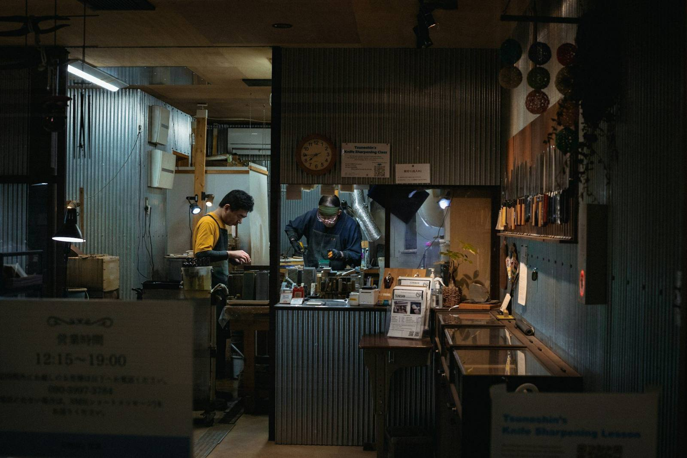

KAJERSETU / BUILD YOUR WAY FORWARD
Your skills.
Your next chapter.
Explore possibilities, organise your preparation, and take the next step with purpose.
Explore sample rolesDEMO ONLY — fictional roles and employers. No real vacancies or applications are offered here.
কাজ খুঁজুন · Explore sample roles
Know what to verify
Use the Bangla/English job circular question guide to practise checking fictional roles. It is an offline FAQ, not live AI or a vacancy service.
Before applying
Verify a real opening on the employer’s original site. Do not share passwords, OTPs or bank details with recruiters.
Read Bdjobs’ applicant warnings